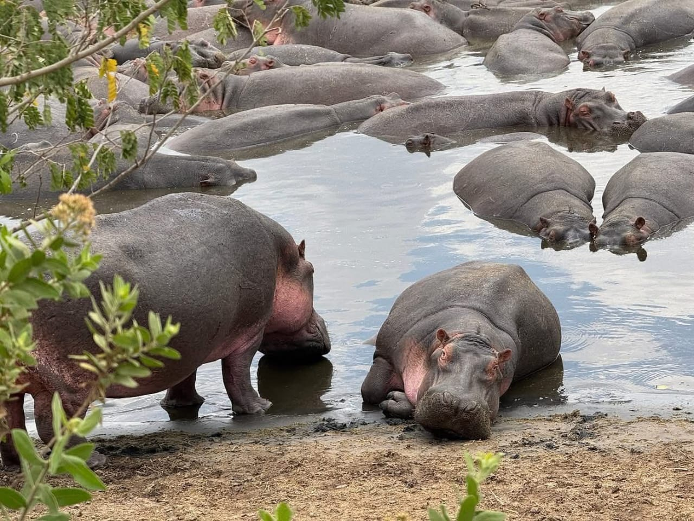
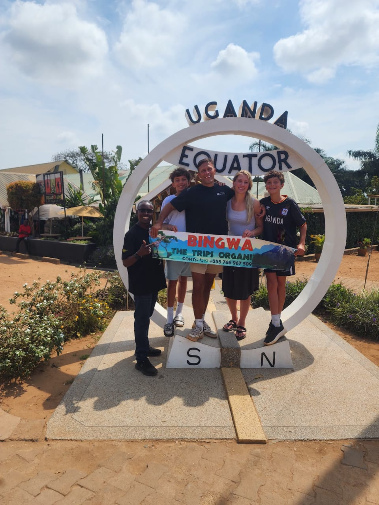
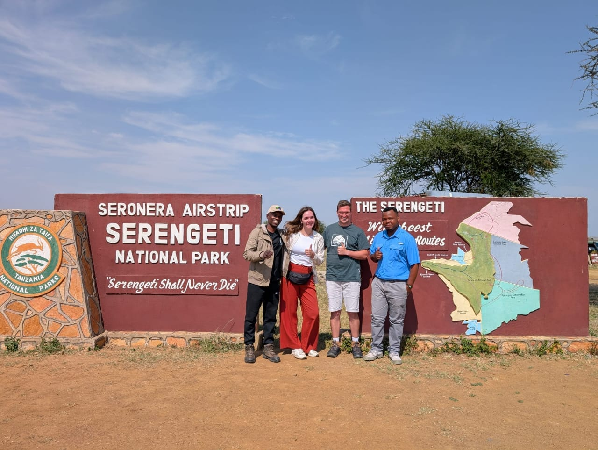
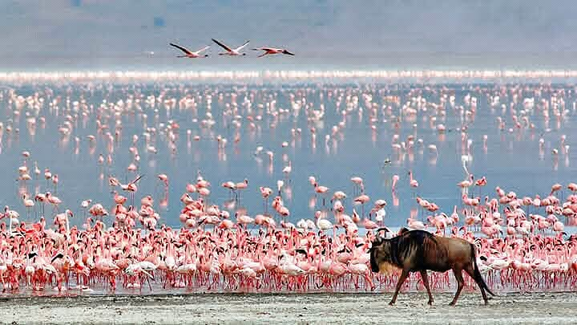
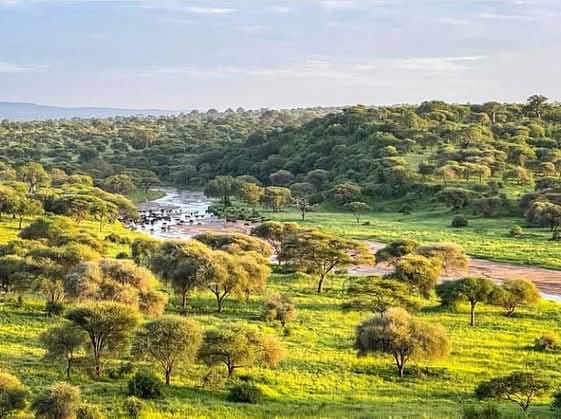
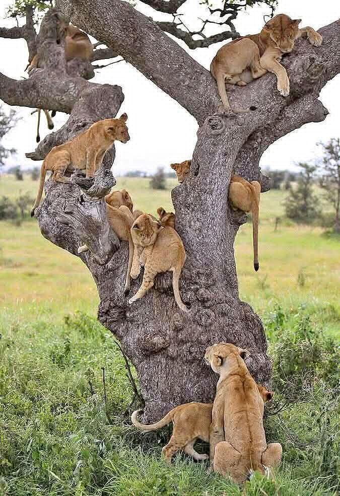
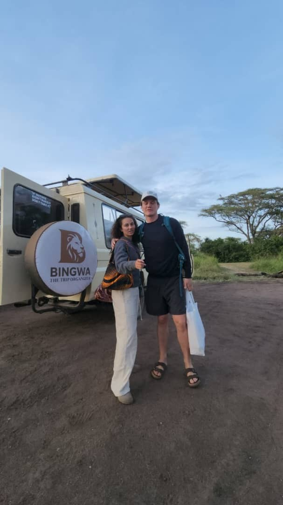

Vivutio vya Utalii
Kutoka milimani hadi baharini — haya ndiyo maeneo makuu tunayofanyia kazi.
Bingwa hupanga safari kwenda maeneo haya ya kihistoria na ya kiasili kote Tanzania na ukanda wa Maziwa Makuu. Kila mahali pana kitu chake cha kipekee — kutoka kwenye uhamiaji mkubwa wa nyumbu hadi fukwe za Zanzibar na maporomoko ya maji ya vijijini.

Serengeti
Nyanda zisizo na mwisho na uhamiaji mkubwa wa wanyama duniani — kivutio namba moja cha safari Tanzania.

Ngorongoro
Bonde kubwa la volkano lenye wanyamapori wengi wakiwemo Big Five, ndani ya mandhari ya ajabu.

Kilimanjaro Mountain
Mlima mrefu kuliko yote barani Afrika — changamoto na kumbukumbu ya maisha kwa wapandaji.

Tarangire
Maarufu kwa idadi kubwa ya tembo na miti mikubwa ya mibuyu yenye maumbo ya kipekee.
_(28503184931).jpg?width=700)
Ziwa Manyara
Ziwa lenye flamingo wengi, misitu na mkusanyiko mkubwa wa nyani — paradiso ya ndege.

Mikumi
Karibu na Dar es Salaam, maarufu kwa simba wanaopanda miti na mandhari ya wazi.

Gombe
Nyumbani kwa sokwe mtu na mahali alipofanyia utafiti Dkt. Jane Goodall, kando ya Ziwa Tanganyika.

Rubondo
Kisiwa cha kijani ndani ya Ziwa Victoria, kwa faragha ya kutazama viboko na ndege.
Zanzibar
Mji Mkongwe, ziara za viungo na fukwe nyeupe za Nungwi na Paje — mapumziko kamili.

Masai Mara
Mwendelezo wa mfumo wa ikolojia wa Serengeti upande wa Kenya, maarufu kwa uvukaji wa Mto Mara.

Ikweta (Uganda)
Simama kwenye mstari wa ikweta — mguu mmoja Kaskazini, mwingine Kusini mwa dunia.
Kwa nini uchague Bingwa — The Trip Organizer, na siyo kampuni nyingine? Kwa sababu safari yako inapangwa na mtu mmoja moja kwa moja, kuanzia ujumbe wa kwanza WhatsApp hadi siku unaporudi uwanja wa ndege — hakuna call centre wala kupitishwa kwa mawakala wengi. Tunafanya kazi moja kwa moja na madereva, waongoza watalii, malodge na wamiliki wa boti tunaowaamini, hivyo bei unayopewa ndiyo hasa unayolipia huko uwanjani, bila gharama za ziada zilizofichwa. Ratiba za safari zinapangwa kulingana na wewe binafsi — siyo kifurushi kilichowekwa tayari — na tuko karibu nawe WhatsApp saa 24/7 wakati wa safari yako, tayari kukusaidia chochote kitakachotokea njiani.
Maeneo tunayofanyia kazi
Top-Best Tanzania Safari Destination(s) For 2026 - 2027: Everything To Know!
Gundua maeneo bora zaidi ya pori la Tanzania kwenye safari na ziara zetu kutoka Arusha, Moshi, Mwanza, Zanzibar, Karatu na Dar es Salaam, na furahia Serengeti, Ngorongoro, Tarangire na Mikumi. Bingwa the Trip Organizer inakuletea kwa fahari maeneo kamili na bora zaidi ya safari Tanzania kwa ajili ya safari yako ya 2026 - 2027. Maeneo bora na makuu ya safari kwa msimu huu ni: Hifadhi za Taifa za Serengeti, Bonde la Ngorongoro, Tarangire, Manyara, na Mikumi. Kila moja ya hifadhi hizi maarufu kwa safari zako za Tanzania 2026 - 2027 hutoa uzoefu wa kipekee na usiosahaulika wa wanyamapori, kuanzia nyanda zisizo na mwisho na Uhamiaji Mkubwa wa Serengeti, hadi mandhari ya kuvutia na mikutano na Big Five ndani ya Bonde la Ngorongoro. Tarangire inavutia kwa mibuyu yake ya kale na makundi makubwa ya tembo, wakati Ziwa Manyara linavutia kwa simba wanaopanda miti na ndege wa aina mbalimbali. Kwa wale wanaotafuta safari isiyo na msongamano mkubwa lakini yenye mvuto sawa, Hifadhi ya Taifa ya Mikumi inatoa fursa nzuri ya kuona wanyamapori katika upeo mpana na wazi, ikitoa safari bora ya Tanzania kutoka Zanzibar na Dar es Salaam. Pamoja na Bingwa the Trip Organizer, gundua maeneo haya bora ya safari, yaliyochaguliwa kwa umakini kukupa uzuri bora wa wanyamapori, mandhari, na utamaduni wa Tanzania kwa ajili ya safari yako ya 2026 - 2027.
Best 5 Safaris in Tanzania
-
Serengeti
The Serengeti Safari. Join to experience Serengeti safari tour — Serengeti National Park is most famous for its vast plains, the Great Wildebeest Migration, and abundant wildlife, including the "Big Five" (lion, leopard, elephant, rhino, and Cape buffalo). In 2026 - 2027 Serengeti safari tours is one of Tanzania's most iconic and unforgettable wildlife adventures offering the spectacular Serengeti great migration. Located in northern Tanzania, the Serengeti National Park is world-famous for its vast plains, breathtaking landscapes, and the spectacular Great Wildebeest Migration — a natural phenomenon where over two million wildebeests, zebras, and gazelles move across the ecosystem in search of fresh grazing land.
-
Ngorongoro
A Ngorongoro safari tour with unforgettable journey. A Ngorongoro Crater Safari is a World Heritage site, this is the world's largest intact volcanic caldera and a haven for wildlife, including the "Big Five" as lion, leopard, elephant, rhino and buffalo. Ngorongoro Crater is the top-notch safari destination for Big Five safari game drive, it provide easy spotting of animals leading to be the best safari destination in Tanzania. Tanzania is a premier, world-class safari destination, it is known for its stunning landscapes, rich wildlife, and most iconic safari parks in Africa-Tanzania-Arusha. Let see the 5 best and most famous safaris to experience in Tanzania, covering the most complete and iconic safaris in the country.
-
Tarangire
Tarangire day tour from Moshi with jeep. The Tarangire Safari offers a truly authentic and serene wildlife experience in northern Tanzania. Located just a few hours from Arusha, Tarangire National Park is famous for its ancient baobab trees, sweeping savannas, and one of the largest elephant populations in East Africa. The park's name comes from the Tarangire River, which serves as a vital water source for animals throughout the dry season.
-
Lake Manyara
Lake Manyara Safari Tour. This is one of Tanzania's most beautiful and diverse parks, offering a unique safari experience with a combination of stunning landscapes and varied wildlife. Located at the base of the Great Rift Valley escarpment, the park is well-known for its birdwatching, lush vegetation, and remarkable wildlife sightings. The Lake Manyara Safari takes you to one of northern Tanzania's most diverse and picturesque national parks. Famous for its lush green forests, alkaline lake, and soda flats, Lake Manyara National Park is a haven for wildlife enthusiasts and bird watchers alike. It is especially renowned for its tree-climbing lions, a unique phenomenon rarely seen elsewhere in Africa.
-
Mikumi
Mikumi Safari — Mikumi National Park safari tour. Mikumi is one of Tanzania's up-coming yet highly rewarding safari destinations. Located in the southern part of the country, Mikumi is part of the Selous-Mikumi ecosystem, which also includes the Selous Game Reserve, offering an expansive and varied wildlife safari experience.

The Serengeti Safari
Jiunge nasi kufurahia safari ya Serengeti — Hifadhi ya Taifa ya Serengeti inajulikana zaidi kwa nyanda zake kubwa, Uhamiaji Mkubwa wa Nyumbu, na wanyamapori tele, wakiwemo "Big Five" (simba, chui, tembo, faru, na nyati). Katika 2026 - 2027 safari za Serengeti ni mojawapo ya matukio maarufu na yasiyosahaulika ya wanyamapori Tanzania, yakitoa Uhamiaji Mkubwa wa kushangaza wa Serengeti. Ikiwa kaskazini mwa Tanzania, Hifadhi ya Taifa ya Serengeti inajulikana duniani kote kwa nyanda zake kubwa, mandhari ya ajabu, na Uhamiaji Mkubwa wa Nyumbu — tukio la asili ambapo zaidi ya nyumbu, punda milia na swala milioni mbili husafiri kuvuka mfumo wa ikolojia kutafuta malisho mapya.
Ask about this trip
Ngorongoro Crater Safari
Safari ya Bonde la Ngorongoro ni safari isiyosahaulika. Bonde la Ngorongoro ni Tovuti ya Urithi wa Dunia — bonde kubwa kuliko yote duniani la volkano lililobaki kamili, na kimbilio la wanyamapori, wakiwemo "Big Five": simba, chui, tembo, faru na nyati. Bonde la Ngorongoro ni kivutio bora kabisa cha safari za kuona Big Five, kinatoa fursa rahisi ya kuona wanyama, na hii ndiyo inayolifanya kuwa mojawapo ya maeneo bora zaidi ya safari Tanzania. Tanzania ni kivutio bora cha kimataifa cha safari, kinachojulikana kwa mandhari yake ya ajabu, wanyamapori tele, na hifadhi maarufu zaidi za safari barani Afrika — Tanzania, Arusha. Hebu tuangalie safari 5 bora na maarufu zaidi za kufurahia Tanzania, zinazojumuisha safari kamili na maarufu zaidi nchini.
Ask about this trip
Tarangire Safari
Safari ya Tarangire hutoa uzoefu wa kweli na wa amani wa wanyamapori kaskazini mwa Tanzania. Ikiwa masaa machache tu kutoka Arusha, Hifadhi ya Taifa ya Tarangire inajulikana kwa miti yake ya mibuyu ya kale, savana kubwa, na mojawapo ya makundi makubwa zaidi ya tembo Afrika Mashariki. Jina la hifadhi hii linatokana na Mto Tarangire, unaokuwa chanzo muhimu cha maji kwa wanyama wakati wote wa kiangazi.
Ask about this trip
Lake Manyara Safari Tour
Hii ni mojawapo ya hifadhi nzuri na tofauti zaidi Tanzania, inayotoa uzoefu wa kipekee wa safari unaochanganya mandhari ya ajabu na wanyamapori mbalimbali. Ikiwa chini ya ukingo wa Bonde la Ufa, hifadhi hii inajulikana kwa uangalizi wa ndege, mimea mizuri, na uonaji wa kuvutia wa wanyamapori. Safari ya Ziwa Manyara inakupeleka katika mojawapo ya hifadhi za taifa tofauti na za kuvutia zaidi kaskazini mwa Tanzania. Ikijulikana kwa misitu yake ya kijani, ziwa lenye chumvichumvi, na tambarare za soda, Hifadhi ya Taifa ya Ziwa Manyara ni kimbilio la wapenzi wa wanyamapori na waangalizi wa ndege. Inajulikana hasa kwa simba wanaopanda miti, tukio la kipekee ambalo halionekani mara nyingi sehemu nyingine Afrika.
Ask about this trip
Mikumi Safari
Ziara ya safari Hifadhi ya Taifa ya Mikumi. Mikumi ni mojawapo ya maeneo ya safari yanayoendelea kukua lakini yenye manufaa makubwa Tanzania. Ikiwa kusini mwa nchi, Mikumi ni sehemu ya mfumo wa ikolojia wa Selous-Mikumi, unaojumuisha pia Hifadhi ya Selous, ukitoa uzoefu mpana na tofauti wa safari ya wanyamapori.
Ask about this trip